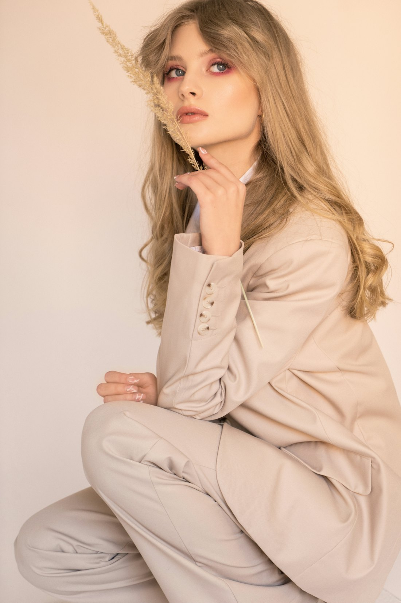
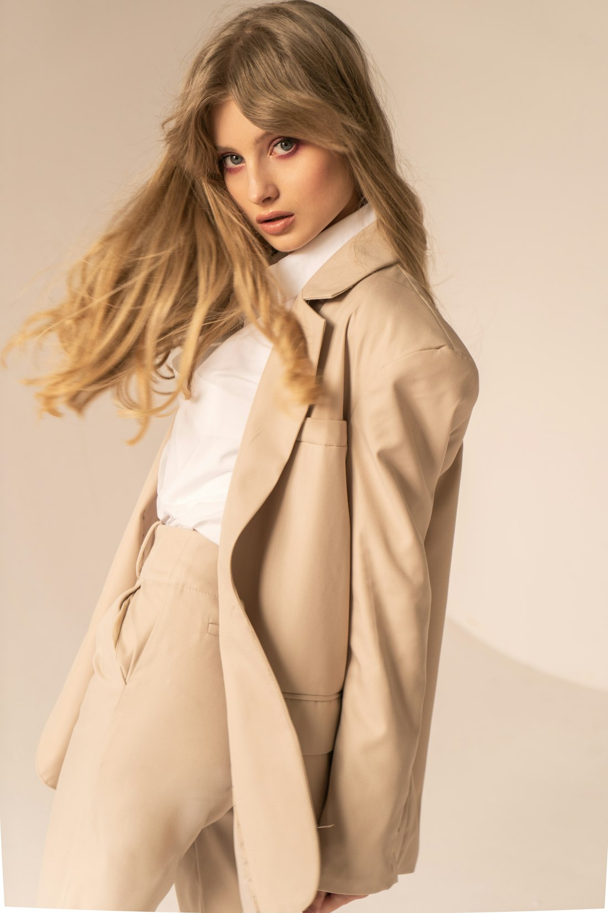
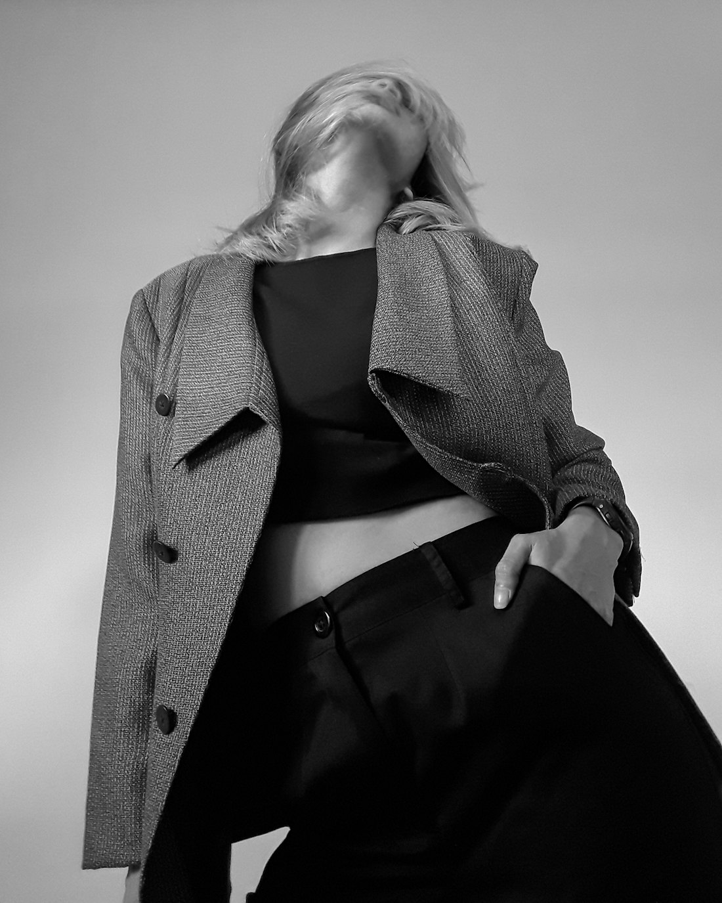
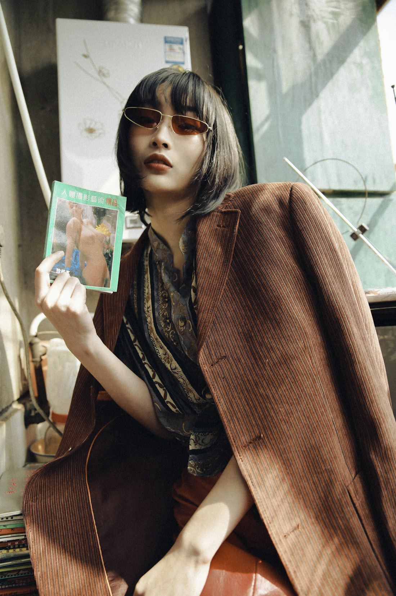
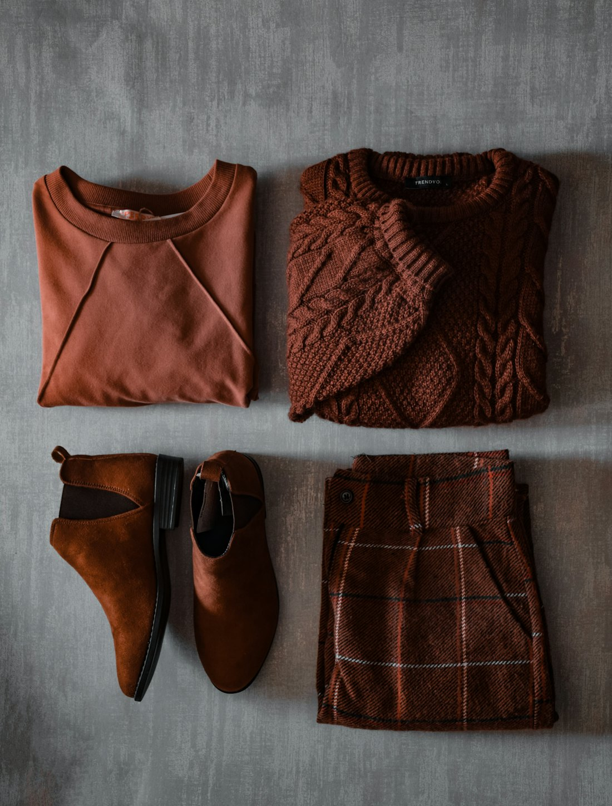
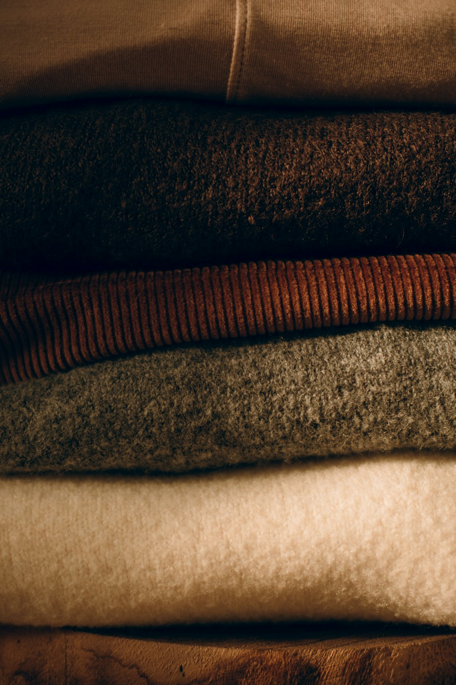
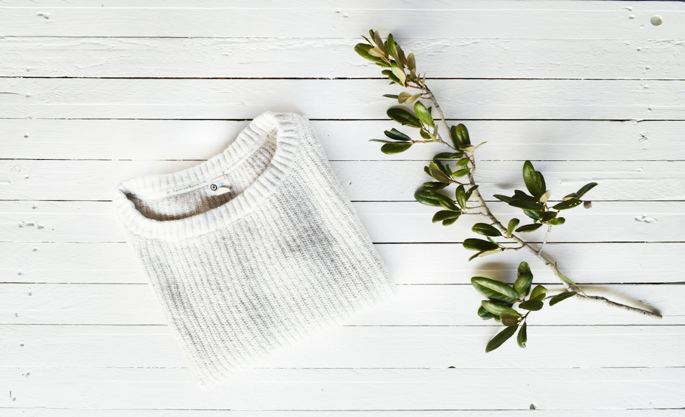

Look 01
The workshop
Fewer things, better made.
- Made in
- Three family workshops
- Repairs
- Free for two years
- Materials
- Organic, recycled, vegetable-tanned
Autumn / Winter 2026
Clothing and accessories in honest materials, cut to be worn every day and kept for years.
The house
We make a small number of things in honest materials, and we make them to be worn out slowly. Leather that softens. Cotton that holds its shape. Knits you’ll still be wearing in ten years.

Chapter one
Relaxed suiting, brushed knits and leather that ages with you. Twelve pieces that work together, made in small runs in family workshops.

Plate 02. Camel coat, cream knit, shot in natural light at the studio.
Autumn / Winter 2026
Four looks · keep scrolling
Look 01
Look 02

Look 03

Look 04
Twelve pieces this season, each one available in a few considered colours.
Shop allThe workshop

Guides · 4 min read
How to build a small autumn wardrobe that actually works together.

Care · 3 min read
Simple ways to keep wool and cotton soft for years, not seasons.

Makers · 6 min read
Meet the family who knit our Rib Knit by hand, twelve at a time.